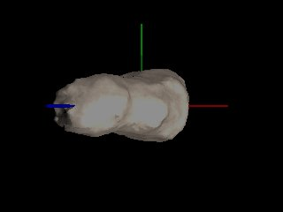

The aim of this exercise is to generate the animation of the
movement of an asteroid after the collision with a small meteorite. The
data regarding the geometry of the asteroid (Toutatis) is contained as
a triangular mesh in the file
toutatis.inc.
which is read by the povray test code prova.pov.
The sequence of the collision animation will be achieved by means of two distinct povray codes: before.pov
(containing the scene description before the collision takes place,
where the asteroid is at rest, and containing also data regarding the
meteorite trajectory) and after.pov ,
in which the movement of asteroid Toutatis as a function of time is read from the file transforma.dat,
which for successive frames should contain updated values of the
homogeneous transformation matrix elements, describing Toutatis
position and orientation at successive time steps.
For this lab session you need therefore:
1) Generate the sequence previous to the collision ( - 3 < t < 0
), using the file before.pov (some 25 images). You just need to prepare a suitable initialization file before.ini and render it. The names of the images generated will look similar to before*.png
2) Compute, from the data of the small meteorite making impact (data contained in the file before.pov, the total linear momentum P and total angular momentum L of the whole system. From the linear momentum P (which is conserved in a collision) find the CM (Center of Mass) velocity of the asteroid (with the small meteorite inside it) after the collision.
3) In order to generate the images displaying the scene after the collision, derive an algorithm and write a code implementing it, which will compute for successive time steps the homogeneous matrix T for the position and orientation of Toutatis and overwrites the result in the file transforma.dat. (As test cases, you have the values corresponding to the homogeneous matrices at t=0 , t=1 and t=2, in the files transforma0.dat, transforma1.dat and transforma2.dat, respectivley). You have a guide regarding how to update the homogeneous matrix T in the documents guide.ps and guide2.ps.
4) Make a short discussion regarding the time step used (do you
obtain similar results with half the time step and double number of
frames?) Note: you don't need to renderize the images for this study,
just discuss the transformation matrix obtained T(t).
5) Executing your code (which updates the state of the system
for a time interval dt) and rendering the image in a loop, generate the
sequence of images corresponding to the movement after the impact ( t
> 0 ) (some 250 (?) images). Finally convert the full sequence to an mpg
file. A command line similar to
convert before*.png after*.png name.mpg will do the job. You could also rename both sets before*.png and after*.png to a single set like full_sequence*.png and convert it to an animated sequence.